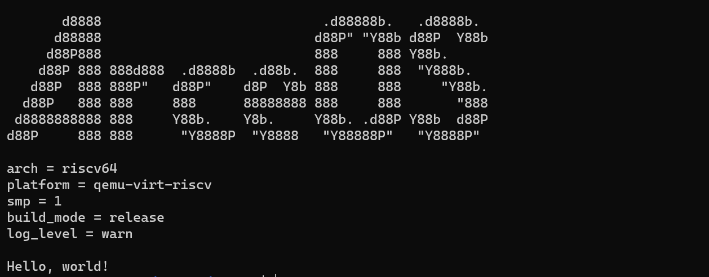

运行 helloworld unikernel
本节介绍如何在 QEMU 模拟器上运行 helloworld unikernel。
-
执行如下命令，获取 ArceOS 源码包：
git clone https://github.com/rcore-os/arceos.git -
进入arceos目录，执行如下命令，编译并运行 helloworld unikernel：
make ARCH=riscv64 A=apps/helloworld run其中，
ARCH 指定 CPU 体系架构，目前支持选项：
riscv64,aarch64，x86_64。A 指定用户程序的相对路径。

到这里，恭喜你完成了实验环境的配置，可以开始阅读教程的正文部分了！
Q & A
当代码跑不起来的时候，可以尝试：
- 分支是否与 原版仓库（而非 fork 出来的仓库）的对应分支同步。如不同步的话考虑通过
git pull进行更新。注：这是因为 Rust 的版本更迭较快，如不及时更新的话曾经能正常运行的代码也会无法运行。 - 项目根目录下的
rust-toolchain非常重要，它代表整个项目采用的 Rust 工具链版本。请务必保持其与原版仓库对应分支一致。 - 通过
make clean或者cargo clean删除构建产物，并重新make run。注：出现这样的问题通常说明框架的构建脚本存在 bug，可以提 issue。
如果怀疑遇到了网络问题，可以检查：
- 请按照本章说明进行 Rust 安装和 crates.io 镜像配置。通常情况下能够解决 Rust 工具链更新和下载已发布到 crates.io 上库的问题。